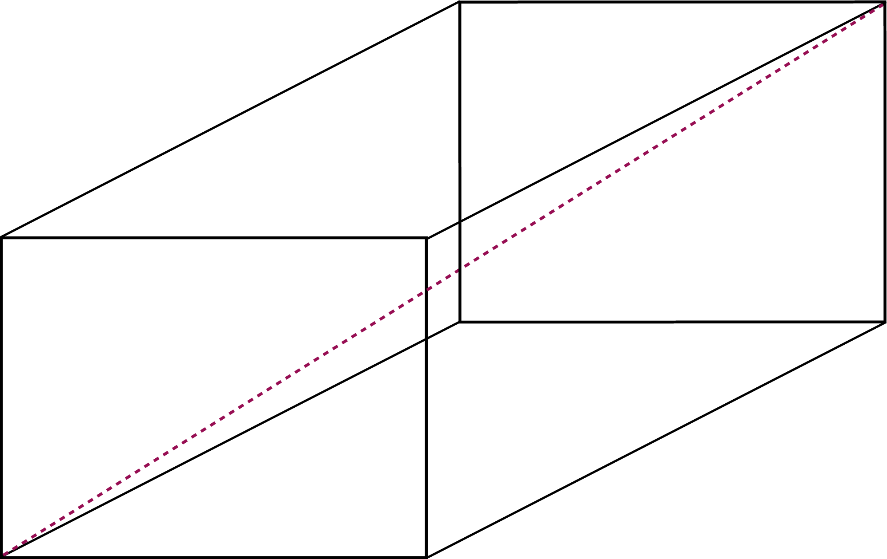

Assignment 1
Deadline
6 September 2022 (Tuesday), 23:59 pm.
Prerequisite
- You have completed Exercises 0 and 1.
Learning Outcomes
- Be comfortable writing simple C programs that involve arithmetic operations,
long,double, andbooltypes, and conditionalif/elsestatements. - Be comfortable breaking down a problem into smaller sub-problems that can be resolved using functions, including reusing existing functions written for other programs (with a tweak), writing a function that calls itself, designing what should the inputs and return values/types of a function.
Grading
This assignment contributes 3% towards your final grade.
The total marks for this assignment are 30 marks. For Programming Assignment 1, the sole criterion for grading is correctness -- this includes the correctness of syntax, practices, approach, and logic, and whether you correctly follow our instructions. Note that even if your solution produces the correct output every time, it may not get full marks if the approach is wrong.
Question 1: Cuboid (5 marks)
A cuboid is a 3D shape with six rectangular faces. We can specify such a cuboid with three parameters, the width

Our task is to calculate (i) the surface area of a cuboid, and (ii) the length of the diagonal of the cuboid (the red dash line in the figure above).
Complete the task by decomposing the calculations into two functions. To complete this task, in cuboid.c,
- Write a function
hypotenuse_ofto compute the hypotenuse of a right-angled triangle, given the length of the legs (the sides adjacent to the right angle). - Write a function
area_of_rectanglethat computes the area of a rectangle given its width and length.
Finally, complete the program cuboid.c so that it reads, from the standard input, three positive integers representing the width, length, and height of the cuboid (in that order) and prints, to the standard output, its surface area, followed by the length of its diagonal.
Solve this question by using composing and reusing the two functions above. You may add additional functions if needed.
Pay attention to the types (long or double) used in the inputs, calculations, and outputs. Keep your variable as integer type (long) as long as possible.
Sample Run
1 2 3 4 5 6 7 8 | |
Question 2: Digits (5 marks)
Write a program digits.c that reads in a non-negative integer, and prints the sum of the cube of individual digits in this integer.
For instance, if the input is 1933091, then the sum is
You must not use a loop to solve this. Instead, write a recursive function sum_of_digits_cubed. This function takes in an integer and returns the sum of the cube of individual digits of that integer, and it should call itself to solve this question.
A solution that uses a loop in any way will receive 0 marks for this question.
Sample Run
1 2 3 4 5 6 | |
Question 3: Ordinal Suffix (5 marks)
In English, an ordinal number is written with numerals, followed by its letter suffixes. For instance: 1st, 2nd, 3rd, 4th, 11th, 31st, etc. The rule is that a number that ends with digit 1 should have a suffix "st" (except if it ends with 11), a number that ends with 2 should have a suffix "nd" (except if it ends with 12), and a number that ends with 3 should have a suffix "rd" (except if it ends with 13). All other numbers should end with "th".
Write a program suffix that reads in an integer number from the standard input and prints out the number with its ordinal suffix.
Your program should include a void function print_with_suffix(long n) that takes in the input and prints out the number followed by its suffix.
1 2 3 4 5 6 7 8 9 10 11 12 | |
Question 4: Taxi Fare (15 marks)
The taxi fare structure in Singapore must be one of the most complicated in the world! Check out: http://www.taxisingapore.com/taxi-fare/.
For this exercise, we will just use the following simplified fare structure:
| Basic Fare | |
|---|---|
| The first 1 km or less (Flag Down) | $3.90 |
| Every 400 m thereafter or less, up to 10 km | $0.24 |
| Every 350 m thereafter or less, after 10 km | $0.24 |
| Surcharge | ||
|---|---|---|
| Monday to Friday | 6:00 to 9:29 | 25% of metered fare |
| Daily | 18:00 to 23:59 | 25% of metered fare |
| Daily | 0:00 (midnight) to 5:59 | 50% of metered fare |
Note that the surcharge is applicable based on the boarding time. For instance, if the trip started at 17:50 and ended at 18:10, then no surcharge is incurred.
Write a program taxi.c that computes the taxi fare. The program, called taxi, takes in four integers as inputs:
- The first is the day of the week. It can only be the value
0to6,0denotes Sunday,1denotes Monday, ..., and6denotes Saturday. - The second and the third inputs denote the starting time of the trip: the second input indicates the hours since midnight of the stated day, and the third input indicates the minutes since the beginning of the stated hours.
- The fourth and final input is the distance of the trip, in meters.
Your program should print a single floating point number, which is the cost of the fare in dollars.
Examine the following examples for more details:
Example 1
1 2 3 | |
- Start: Mon 17:59
- Distance: 1,000 m
The metered fare is $3.90 since the distance traveled is 1 km. The boarding time is before 18:00, so there is no surcharge. The total fare is $3.90.
Example 2
1 2 3 | |
- Start: Mon 17:57
- Distance: 2,000 m
The metered fare for the first 1,000 m (1 km) is $3.90. The next 1,000 m is charged $0.24 for every 400 m (or less) traveled. The passenger is charged an additional 3 x $0.24 = $0.72, giving the total metered fare of $4.62.
The boarding time is before 18:00, so there is no surcharge.
Example 3
1 2 3 | |
- Start: Mon 05:50
- Distance: 15,000 m
The metered fare for the first 1,000 m (1 km) is $3.90. The next 9,000 m is charged $0.24 for every 400 m traveled. The passenger is charged an additional 23 x $0.24 = $5.52. The remaining 5,000 m is charged $0.24 for every 350 m (or less) traveled. The passenger is charged an additional 15 x $0.24 = $3.60. The metered fare is $3.90 + $5.52 + $3.60 = $13.02
The boarding time is before 6:00, so there is a 50% surcharge. The total fare is $19.53.
Instructions
-
Break down this problem into multiple sub-problems, each can be solved by a function. Write one function to answer each question below:
- given the day of the week, is it a weekday?
- given the time of boarding, does it fall under the morning peak hour (6:00 - 9:29)?
- given the time of boarding, does it fall under the evening peak hour (18:00 - 23:59)?
- given the time of boarding, does it fall under the midnight peak hour (0:00 - 5:59)?
-
Furthermore, break the calculation of fare down into two parts: the basic metered fare and the surcharge. Each of these can be a function. Think about the four inputs to the
taxiprogram. Which one is needed to compute the metered fare? Which ones are used to compute the surcharge? Pass in the appropriate arguments to the function that computes the metered fare and the function that computes the surcharge.